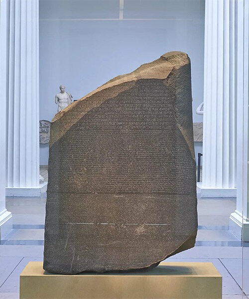
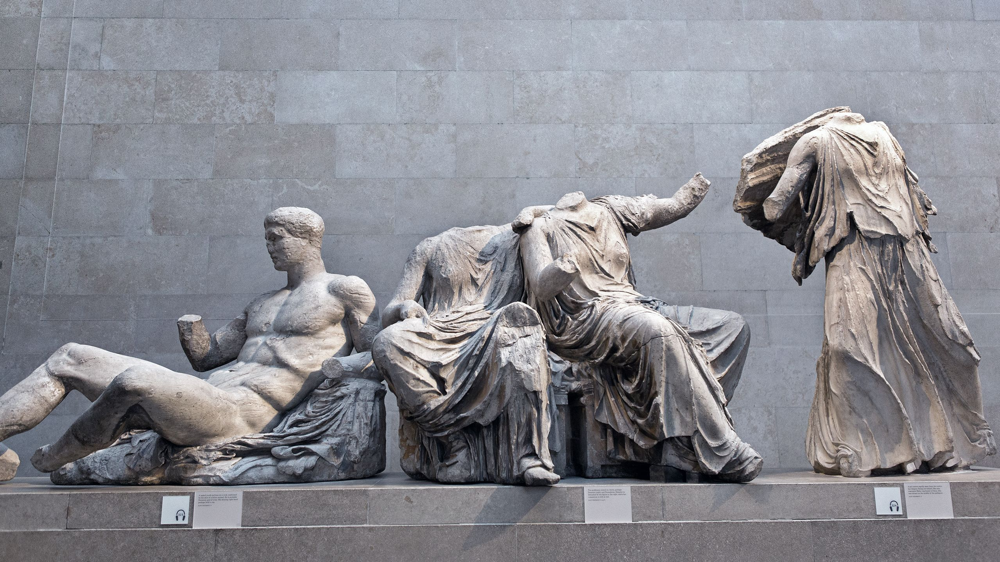
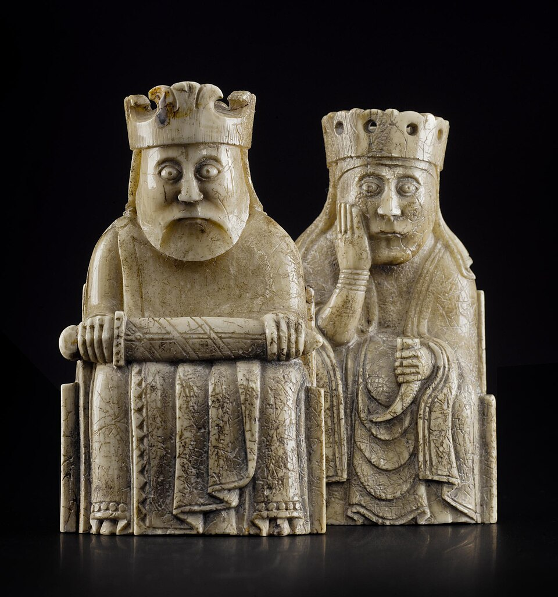
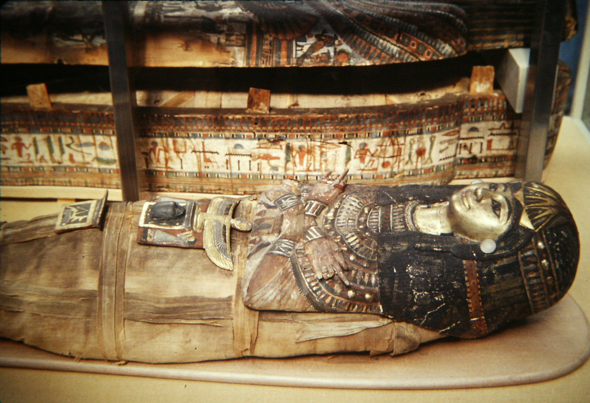
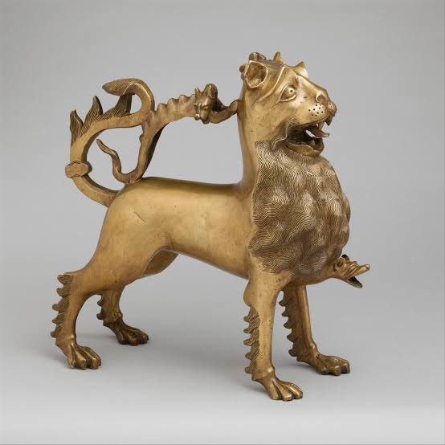
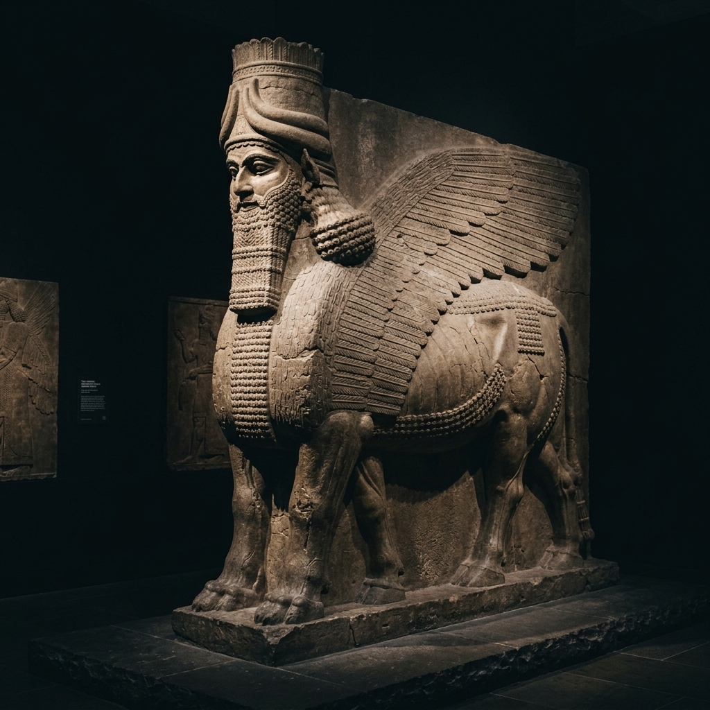
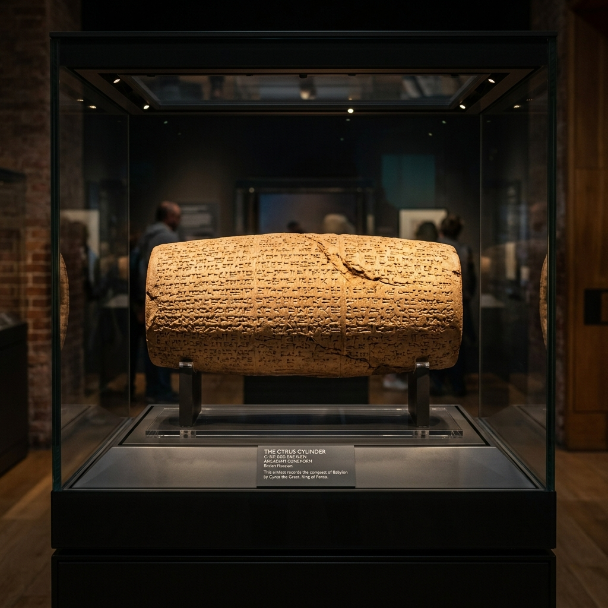

BRITISH
Londondagi Britaniya muzeyi insoniyat tarixi, san'ati va madaniyatiga bag'ishlangan bo'lib, dunyo bo'ylab to'plangan ulkan eksponatlar xazinasidir.
1753-yilda tabib va olim Ser Xans Slounning shaxsiy kolleksiyasi asosida tashkil etilgan.
Norman Foster loyihasi asosida qurilgan shaffof shisha va po'lat gumbazli Ulug' Hovli Yevropadagi eng yirik yopiq jamoat maydonidir.
8 milliondan ortiq san'at va tarix yodgorliklarini o'z ichiga olib, insoniyat madaniyatining qadimgi davrlardan bugungacha bo'lgan yo'lini ko'rsatadi.
Rozetta Toshi — Misr iyerogliflarini ochgan kalit
Rozetta toshi (Rosetta Stone) — miloddan avvalgi 196-yilda Qadimgi Misrda qora granodiorit toshga o‘yilgan shohona farmon matnidir. Toshda bir xil matn uch xil yozuvda: qadimgi Misr iyerogliflari, Misr xalq (demotik) yozuvi hamda qadimgi yunon tilida bitilgan. Aynan shu xususiyati sababli 1822-yilda fransuz olimi Jan-Fransua Shampolion ko‘p asrlar davomida o‘qilmay kelgan Misr iyerogliflarini to‘liq deshifrovka qilishga muvaffaq bo‘lgan. Hozirda ushbu tosh Britaniya muzeyining eng qimmatbaho va eng ko‘p ziyorat qilinadigan eksponatidir.


Mil. avv. 447 y.Parfenon Marmarlari
Afina Akropoli MerosiFidiy boshchiligida yaratilgan qadimgi Yunonistonning eng ulug'vor ma'buda va xudolari tasviri.

XII AsrLyuis Shaxmat Donalari
Vikinglar va SkandinaviyaMorj suyagidan ishlangan, o'rta asr qirollari, ritsarlari va jangchilarini ifodalovchi dunyodagi eng mashhur noyob shaxmat to'plami.

Mil. avv. 1300Katebetning Oltin Mumiyosi
Qadimgi Misr Fiva ShahriMurakkab mumiyalash san'ati, tumorlar va dafn marosimi an'analarini o'zida aks ettiruvchi eksponat.

XIII AsrArslon Shaklidagi Akvaminila
O'rta Asr Ritsarlik DavriZiyofatlarda xizmat qilgan, bronzadan quyilgan va nihoyatda mukammal ishlangan ushbu arslon haykali o'rta asr san'atining nodir namunasidir.

Mil. avv. 865Ossuriya Qanotli Buqasi
Qadimgi Nimrud SaroyiInson aqli, burgut qanotlari va buqa qudratini mujassam etgan salobatli shohona qo'riqchi.

Mil. avv. 539Kipr Silindri (Buyuk Kir)
Qadimgi Bobil va EronDunyodagi eng qadimgi inson huquqlari va bag'rikenglik bayonnomasi hisoblangan gilli yodgorlik.
Muzeyning Asosiy Bo'limlari
Dunyoning turli mintaqalari bo'yicha ajratilgan boy kolleksiyalar
Qadimgi Misr va Sudan Bo'limi
Qohiradagi Misr muzeyidan keyin dunyodagi eng katta va to'liq Misr qadimiy asarlari kolleksiyasi. Bu yerda 100,000 dan ortiq eksponat, jumladan sarkofaglar, mumiyolar va ibodatxona relyeflari mavjud.
- Rozetta toshi (Rosetta Stone) — 4-zal
- Katta Ramzes II ning ulkan byusti
- Amenxotep III haykallari va sfinkslar
- Gebeleyn tabiiy mumiyalari va papiruslar
Qadimgi Yunoniston va Rim Bo'limi
Klassik antik davrning eng yirik to'plamlaridan biri bo'lib, bronza davridan to Rim imperiyasining qulashigacha bo'lgan davrni qamrab oladi. Dunyoning Yetti Mo'jizasidan ikkitasining qoldiqlari shu yerda.
- Parfenon ibodatxonasi marmarlari
- Galikarnas maqbarasi (Dunyodagi Yetti Mo'jizadan biri)
- Efessdagi Artemida ibodatxonasi ustunlari
- Portland vafasi (mashhur Rim shisha idishi)
Osiyo va Yaqin Sharq Bo'limi
Sharqiy Osiyo, Janubiy Osiyo, Islom dunyosi va Qadimgi Mesopotamiya sivilizatsiyalarining betakror merosi. Xitoy chinni idishlari, Islom san'ati durdonalari va Ossuriya qanotli buqalari (Lamassu) namoyish etiladi.
- Ossuriya saroyining qanotli buqalari (Lamassu)
- Kipr silindri (Cyrus Cylinder — ilk inson huquqlari xartiyasi)
- Percival David fondi Xitoy chinni kolleksiyasi
- Al-Buxoriy nomidagi Islom dunyosi galereyasi
Tashrif Buyuruvchilar Uchun Qo'llanma
Britaniya muzeyiga tashrif buyurishdan oldin zarur bo'lgan ma'lumotlar
Ish Tartibi
Har kuni ochiq: 10:00 – 17:00
Juma kunlari: 10:00 – 20:30 (Kechki soatlar)
Yil davomida deyarli barcha kunlar ishlaydi.
Kirish & Chiptalar
Muzeyga kirish: MUTLAQO BEPUL
Maxsus vaqtinchalik ko'rgazmalar: Pullik (£15-£22)
Maslahat: Kirish uchun bepul vaqtli slotni oldindan band qiling.
Manzil & Transport
Manzil: Great Russell St, London WC1B 3DG, UK
Metro bekatlari: Tottenham Court Road, Holborn, Russell Square.
London markazida Bloomsbury hududida joylashgan.
Foydali Maslahatlar
• Buyuk Hovli (Great Court) gumbazini suratga olishni unutmang.
• Rozetta toshi va Parfenon zallarida ertalab odam kam bo'ladi.
• Muzey ichida qulay kofe va suvenir do'konlari mavjud.
Boshqa Dunyo Muzeylarini Kashf Qiling
MuseWiki bo'ylab sayohatni davom ettiring